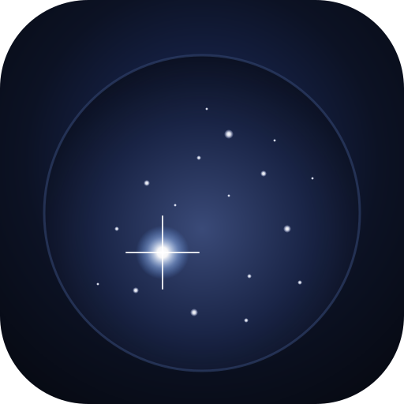

Preprocessor for nova.astrometry.net
Pick or capture a photo from your phone gallery. JPEG, PNG, HEIC supported.
Process at 1/N resolution. Higher = faster, lower memory. Default 2× is good for 12 MP iPhone shots.
Median filter radius for sky-glow estimation. Default 15. Raise to 25 px for bright/uneven backgrounds.
DN above local background to enter detection. Default 10. Keep low — size filter does the noise rejection.
Primary noise filter. Real stars ≥ 15 px, noise spikes < 10 px. Auto-halves with downsample factor (default 7 at 2×).
Discard very large blobs (clouds, the moon, lens-flare). Default 2000 — generous, since bright stars can be large.
peak/area ratio. Real stars ≤ 2.2, noise spikes ≥ 9. Default 3.0 has a clean gap for iPhone afocal shots.
RGB coefficient of variation. Stars are neutral white; ISO noise is coloured. Default 0.5. Set to 1.0 to disable.
Gaussian profile sigma for accepted stars. Default 1.5 — smooths centroids for the source extractor. Set to 0 to disable.
Brightness multiplier after normalisation. Default 3.0 — keeps faint stars visible without saturating the bright ones.
Output background grey level. Default 12 — small lift helps astrometry's source extractor pick its detection threshold.